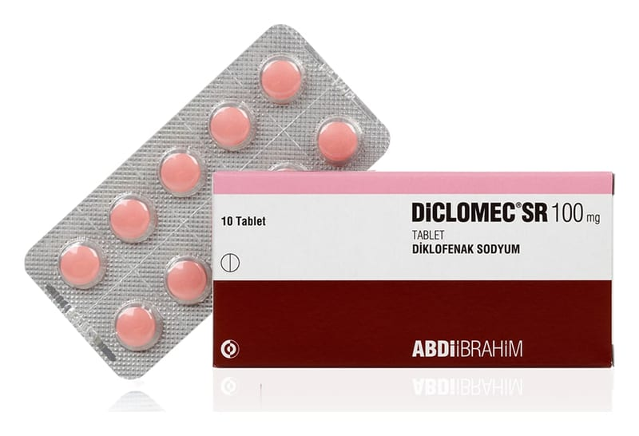

Diclomec SR 100 mg Tablet, 10 Adet

Ne için kullanılır
KT · Bölüm 1• Her tablet 100 mg etkin madde (diklofenak sodyum) içerir. • DİCLOMEC SR pembe renkte, yuvarlak, bikonveks, kenarı eğimli tabletlerdir. • DİCLOMEC SR, ağrı ve iltihap tedavisinde kullanılan “steroidal olmayan iltihap giderici ilaçlar” (NSAİİ’ler) isimli bir ilaç grubuna dahildir. • 10 veya 20 tabletlik ambalaj miktarlarında bulunmaktadır.
DİCLOMEC SR aşağıdaki rahatsızlıkların tedavisinde kullanılabilir:
Kireçlenme (osteoartrit), eklemlerde ağrı ve şekil bozukluğu (romatoid artrit) ve sırt, boyun ve göğüs kafesi eklemlerinde sertleşme ile seyreden ağrılı ilerleyici romatizma (ankilozan spondilit) belirti ve bulgularının tedavisi ile akut guta bağlı eklem iltihabı (akut gut artrit), akut kas-iskelet sistemi ağrıları ve ameliyattan sonraki ağrı (postoperative ağrı) tedavisinde endikedir.
DİCLOMEC SR’ın nasıl etki gösterdiği ya da size neden verildiği konusunda sorularınız varsa lütfen doktorunuza danışınız.